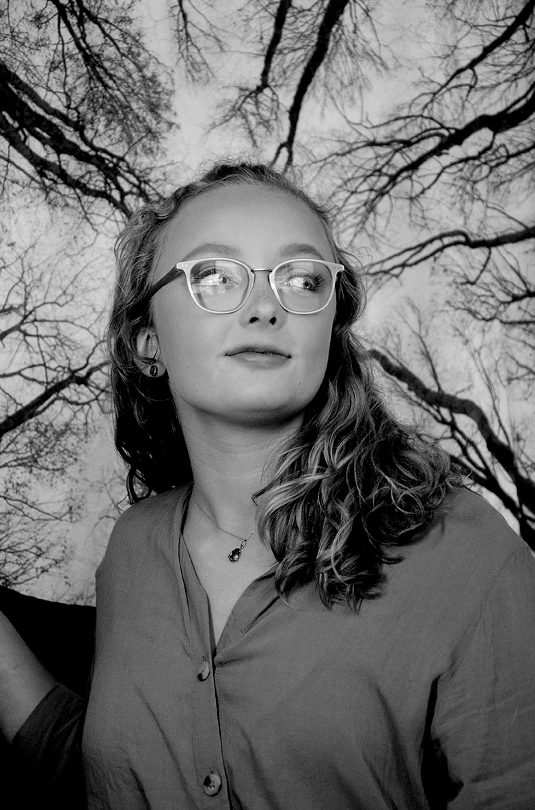

About Idyllic Prints
The purpose behind Idyllic Prints is rooted in natural simplicity and peace. Too often the world that has been created is overwhelming and stressful. Idyllic Prints are made to be just the opposite, idyll; peacefull and picturesque. So take a break, take a look, and be mindful of the tranquility this world has to offer.
Charlotte Watts, the mind and photographer behind Idyllic Prints, has struggled to make sense of this world following life crisis and diagnoses. For Charlotte, photography is an outlet through which she can see the wolrd how it is meant to be seen, mindfully. Her hopes are to produce prints which bring the same sense of tranquility to others who may face similar struggles.